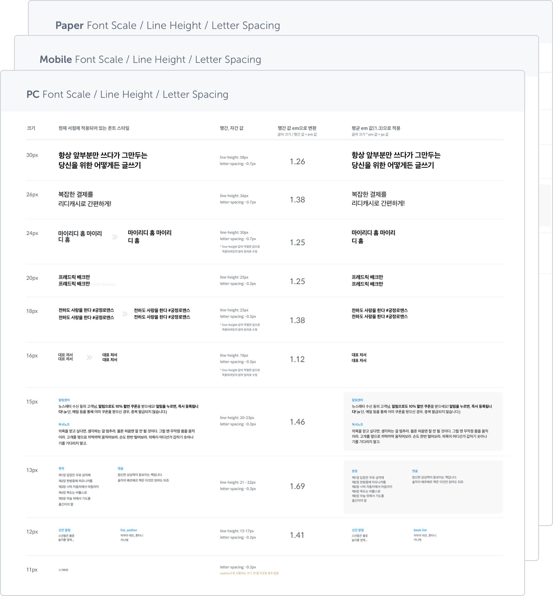

RIDI Design System


디자인 시스템이란 제품을 만들면서 사용하는 디자인 패턴 및 원칙들을 모아둔 시스템을 뜻하며 제품을 효율적이고 빠르게 디자인할 수 있도록 돕는 역할을 합니다. 리디의 제품과 팀이 성장하면서 여러 디자이너, 프론트엔드 개발자가 프로젝트를 진행하는 일이 많아졌고 어느새 필요할 때마다 사용한 컬러 칩이나 UI 컴포넌트 등이 정리되지 않은 채 늘어나는 경우가 생기게 되었습니다. 때문에 제품의 일관된 디자인을 유지하기 어려울 뿐만 아니라 종종 불필요한 커뮤니케이션이 발생하기도 했습니다. 이러한 상황에서 일어나는 크고 작은 문제를 해결하기 위해 내부 논의를 거쳐 리디 디자인 시스템 구축 프로젝트를 진행하게 되었습니다.
디자인 시스템의 목표와 원칙 정하기
프로젝트를 진행하기로 결정하고 가장 먼저 한 일은 디자인 시스템을 통해 이루고자 하는 목표를 확실히 세우고, 프로젝트 팀원 모두에게 공유하는 것이었습니다. 공통 언어를 만들기 위해서 가장 기본적으로 모두가 동의할 수 있는 목표를 세우는 것이 중요하다고 생각했기 때문입니다.
목표를 세운 후에는 디자인 시스템의 범위 및 구성, 의사 결정 프로세스 원칙 등을 정하고 작게는 콘텐츠 내용 작성 시 필요한 규칙을 정의하는 것부터 시작했습니다.
RIDI Design System의 목표
원칙(Principle), 지침(Guideline), 표준(Standard)
리디 디자인 시스템은 세 가지를 목표로 합니다. 크고 작은 디자인 의사결정의 기준이 되며,
효율적으로 빠르게 디자인할 수 있도록 돕고, 제품들의 일관성을 확보할 수 있도록 합니다.
모든 사람이 이해할 수 있는 디자인 언어 만들기: 문서화
언어는 협업의 기본입니다. 공유 된 언어가 없으면 제품을 효과적으로 만들기 어려울 뿐만 아니라 커뮤니케이션 과정에서 팀원 각각이 다른 멘탈 모델을 갖게 될 수 있습니다.
따라서 공통 언어를 사용한다는 것은 제품과 관련된 모든 사람들이 요소의 이름과 정의, 목적에 대해 동일한 접근 방식을 사용하거나 디자인, 프론트엔드에서 사용하는 모든 리소스에 대해 동일한 이름을 사용한다는 의미입니다.
이러한 원칙을 바탕으로 먼저 기존의 UX/UI 히스토리를 파악하여 문서화하는 작업을 진행하였고, 다른 디자인 시스템에서도 이야기하고 있는 내용보다는 리디의 제품 설계에 꼭 필요한 원칙과 내용을 담으려고 하였습니다. 그리고 이와 관련된 모든 내용은 사용자 경험을 우선으로 하였습니다.
모든 문서는 추후 디자인 시스템 사이트에 바로 적용할 수 있도록 마크다운으로 작성하여 내부 리뷰를 진행하였습니다. 리뷰 진행은 히스토리 및 차후 버전 관리를 고려하여 GitHub을 이용하였고, 코드 리뷰 방식과 동일하게 진행하여 문서의 정확성과 완성도를 높이는 과정을 거쳤습니다. 이 과정에서 가장 중요한 것은 역시 제품과 관련된 모든 사람이 해당 문서를 확인할 수 있어야 하고, 의사결정 과정을 모두에게 공유하는 것이었습니다.
디자인 패턴 및 UI 스타일 가이드 정리하기
리디에서는 기존 UI 컴포넌트나 아이콘 등을 정리해놓은 RSG(RIDI Style Guide)라는 문서가 존재했지만 지속적으로 업데이트가 되지 않아 정확성이 떨어지는 문제점이 있었습니다. 그래서 앞서 문서화 한 내용과 RSG를 바탕으로 실제로 제품에 사용할 디자인 패턴 및 UI 스타일을 정리하는 작업이 필요했습니다.
사용자 경험 향상에 있어 이미 검증된 디자인 패턴은 유지하고 그 외의 패턴은 제품을 설계할 때 큰 고민 없이 사용할 수 있도록 하는 것을 중점으로 고려하였는데, 이는 디자이너가 디테일한 디자인에 많은 시간을 보내는 대신 처음부터 이 디자인이 왜 필요한지부터 고민하고 사용자에게 더 집중할 수 있기 때문입니다.
리디북스 서점 UI KIT
타이포그래피는 디바이스 별 사용되고 있는 폰트의 크기/행간/자간 값을 모두 추출하여 모든 디바이스에서 공통으로 사용할 수 있는 폰트 스타일로 맞추는 작업을 진행했고, 목적에 따라 구분하여 사용할 수 있도록 가이드를 만들었습니다.
